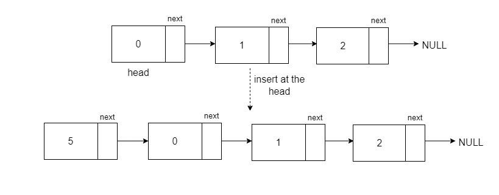
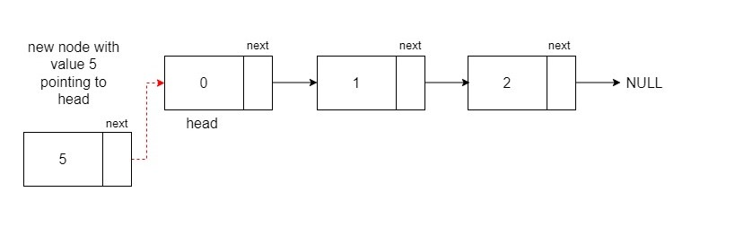
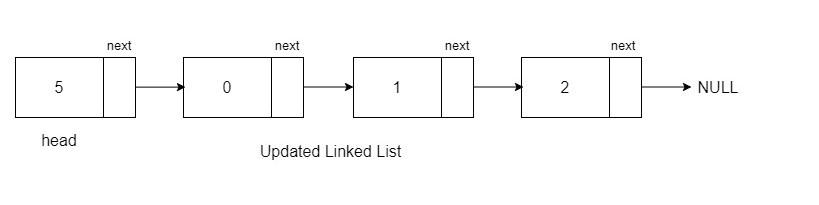

Problem Statement: Given a linked list and an integer value val, insert a new node with that value at the beginning (before the head) of the list and return the updated linked list.
Examples
Example 1:
Input Format: 0->1->2, val = 5
Result: 5->0->1->2

Explanation: We need to insert the value 5 before the head of the given Linked List.
Example 2:
Input Format:12->5->8->7, val = 100
Result: 100->12->5->8->7
Explanation: Again, we need to insert the value 100 before the head of the Linked List.
Solution
Disclaimer: Don't jump directly to the solution, try it out yourself first.
Approach:
To insert a new node with a value before the head of the list, create a new node with the given value val pointing to the head. This node will be the new head of the linked list.
Algorithm:
Create a new node with data as the given value and pointing to the head. This node will be our new head of the linked list.

Now, return the new node as the head of the updated Linked List.

Code:
class Node {
public:
int data;
Node* next;
// Constructor with both data and next node
Node(int data1, Node* next1) {
data = data1;
next = next1;
}
// Constructor with only data (assuming next is initially null)
Node(int data1) {
data = data1;
next = nullptr;
}
};
// Function to print the linked list
void printLL(Node* head) {
while (head != NULL) {
cout << head->data << " ";
head = head->next;
}
}
// Function to insert a new node at the head of the linked list
Node* insertHead(Node* head, int val) {
Node* temp = new Node(val, head);
return temp;
}
int main() {
// Sample array and value for insertion
vector<int> arr = {12, 8, 5, 7};
int val = 100;
// Creating a linked list with initial elements from the array
Node* head = new Node(arr[0]);
head->next = new Node(arr[1]);
head->next->next = new Node(arr[2]);
head->next->next->next = new Node(arr[3]);
// Inserting a new node at the head of the linked list
head = insertHead(head, val);
// Printing the linked list
printLL(head);
return 0;
}
Output:
100 12 8 5 7
Time Complexity: O(1) for inserting the new head of the linked list and O(N) for printing the linked list.
Space Complexity: O(1), as we have not used any extra space.
// Node class to represent a linked list node
class Node {
public int data;
public Node next;
// Constructor with both data and next node
public Node(int data1, Node next1) {
data = data1;
next = next1;
}
// Constructor with only data (assuming next is initially null)
public Node(int data1) {
data = data1;
next = null;
}
}
public class Main {
// Function to print the linked list
public static void printLL(Node head) {
while (head != null) {
System.out.print(head.data + " ");
head = head.next;
}
}
// Function to insert a new node at the head of the linked list
public static Node insertHead(Node head, int val) {
Node temp = new Node(val, head);
return temp;
}
public static void main(String[] args) {
// Sample array and value for insertion
List<Integer> arr = Arrays.asList(12, 8, 5, 7);
int val = 100;
// Creating a linked list with initial elements from the array
Node head = new Node(arr.get(0));
head.next = new Node(arr.get(1));
head.next.next = new Node(arr.get(2));
head.next.next.next = new Node(arr.get(3));
// Inserting a new node at the head of the linked list
head = insertHead(head, val);
// Printing the linked list
printLL(head);
}
}
Output:
100 12 8 5 7
Time Complexity: O(1) for inserting the new head of the linked list and O(N) for printing the linked list.
Space Complexity: O(1), as we have not used any extra space.
# Node class to represent a linked list node
class Node:
def __init__(self, data1, next1=None):
self.data = data1
self.next = next1
# Function to print the linked list
def printLL(head):
while head is not None:
print(head.data, end=" ")
head = head.next
# Function to insert a new node at the head of the linked list
def insertHead(head, val):
temp = Node(val, head)
return temp
if __name__ == "__main__":
# Sample array and value for insertion
arr = [12, 8, 5, 7]
val = 100
# Creating a linked list with initial elements from the array
head = Node(arr[0])
head.next = Node(arr[1])
head.next.next = Node(arr[2])
head.next.next.next = Node(arr[3])
# Inserting a new node at the head of the linked list
head = insertHead(head, val)
# Printing the linked list
printLL(head)
Output:
100 12 8 5 7
Time Complexity: O(1) for inserting the new head of the linked list and O(N) for printing the linked list.
Space Complexity: O(1), as we have not used any extra space.
[tabby title="JavaScript Code"]
// Node class to represent a linked list node
class Node {
constructor(data1, next1 = null) {
this.data = data1;
this.next = next1;
}
}
// Function to print the linked list
function printLL(head) {
while (head !== null) {
console.log(head.data + " ");
head = head.next;
}
}
// Function to insert a new node at the head of the linked list
function insertHead(head, val) {
const temp = new Node(val, head);
return temp;
}
// Sample array and value for insertion
const arr = [12, 8, 5, 7];
const val = 100;
// Creating a linked list with initial elements from the array
let head = new Node(arr[0]);
head.next = new Node(arr[1]);
head.next.next = new Node(arr[2]);
head.next.next.next = new Node(arr[3]);
// Inserting a new node at the head of the linked list
head = insertHead(head, val);
// Printing the linked list
printLL(head);
Output:
100 12 8 5 7
Time Complexity: O(1) for inserting the new head of the linked list and O(N) for printing the linked list.
Space Complexity: O(1), as we have not used any extra space.
In case you are learning DSA, you should definitely check out our free A2Z DSA Course with videos and blogs.
Special thanks to Neerav Sethi for contributing to this article on takeUforward. If you also wish to share your knowledge with the takeUforward fam, please check out this article